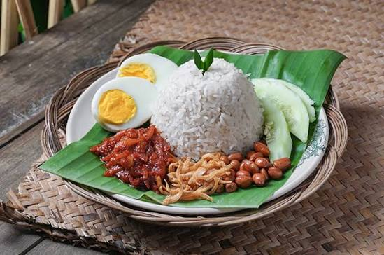
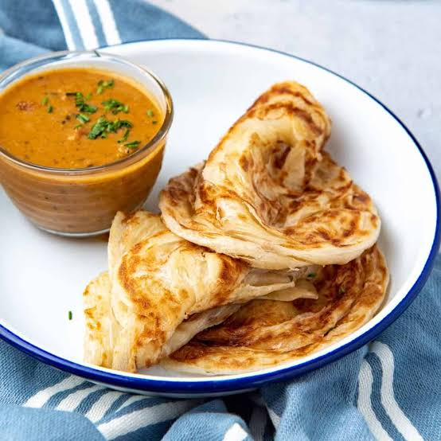
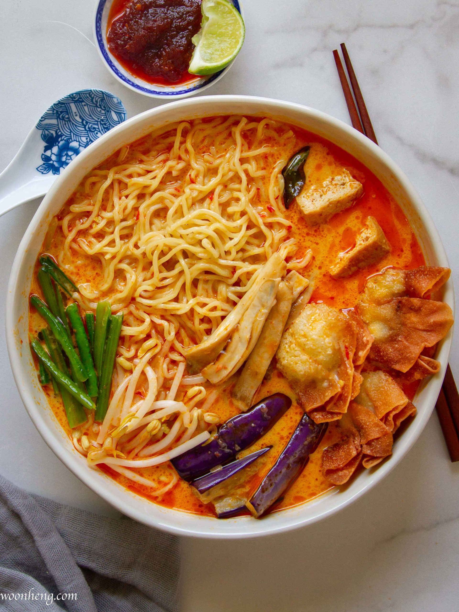
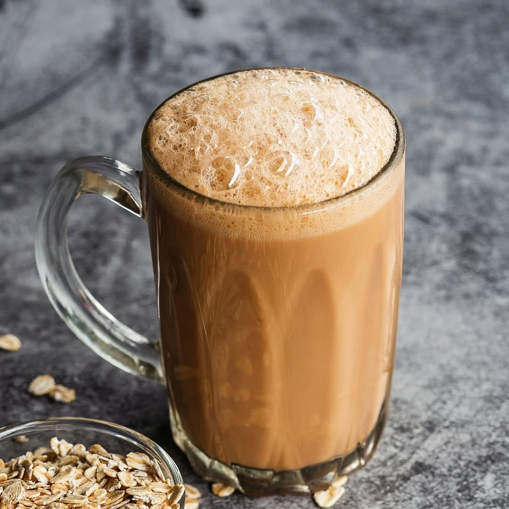
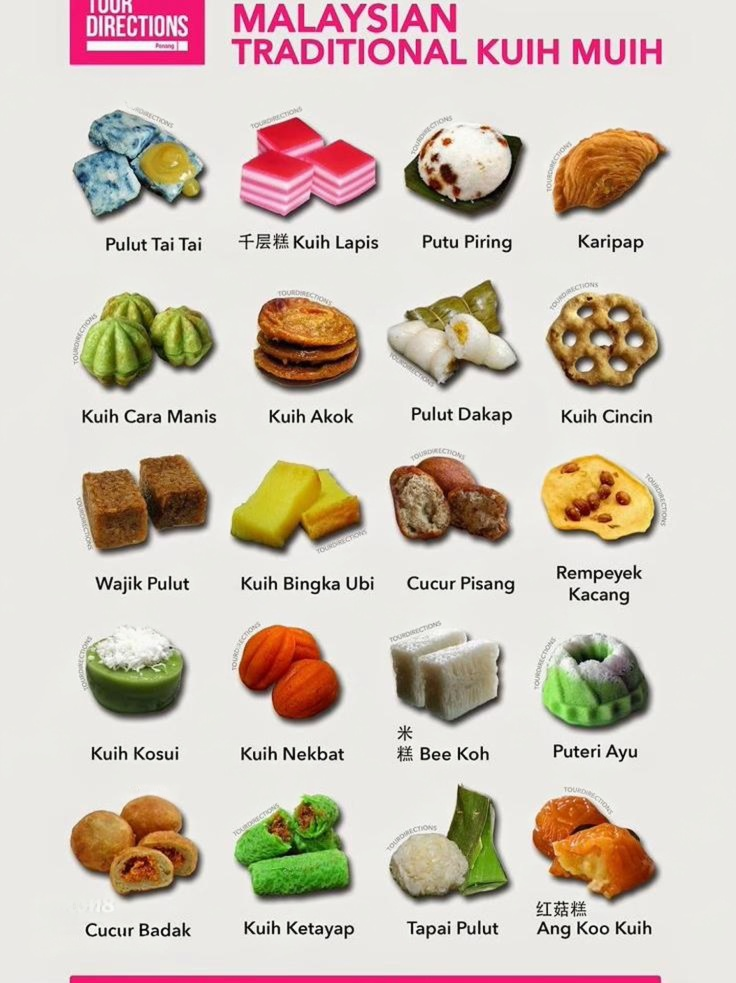
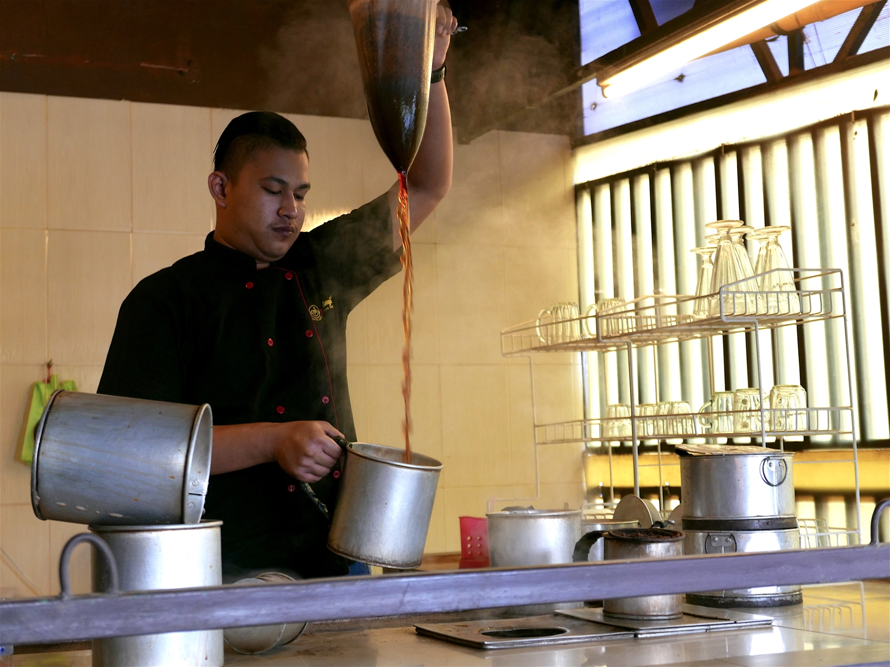

Makanan utama
Nasi Lemak
Nasi beraroma santan yang umum disajikan bersama sambal, ikan bilis, kacang, mentimun, dan telur.
Rasa: gurih & pedasMakanan Malaysia mencerminkan pertukaran budaya dan kreativitas masyarakat. Gunakan filter untuk melihat kategori hidangan.

Filter menggunakan atribut data, event klik, perulangan, dan kondisi JavaScript.
Nasi beraroma santan yang umum disajikan bersama sambal, ikan bilis, kacang, mentimun, dan telur.
Rasa: gurih & pedas
Roti pipih berlapis yang biasa disantap bersama kari atau kuah dal, populer untuk sarapan dan makan ringan.
Tekstur: renyah & lembut
Potongan daging berbumbu yang dipanggang pada tusuk dan sering disajikan dengan saus kacang serta pelengkap.
Aroma: panggang & rempah
Hidangan mi berkuah dengan variasi regional. Komposisi kuah dan pelengkap dapat berbeda antarwilayah.
Rasa: kaya & berlapis
Teh susu yang dituangkan berulang dari ketinggian untuk mencampur minuman dan menghasilkan lapisan buih.
Rasa: manis & creamy
Beragam kue tradisional hadir dalam warna, tekstur, bahan, dan teknik pembuatan yang berbeda.
Karakter: manis & beragam
Nasi lemak, roti canai, dan teh tarik bukan hanya menu. Kebiasaan makan bersama juga menjadi ruang pertemuan lintas latar belakang dalam kehidupan sehari-hari.
Coba bandingkan bahan, teknik memasak, dan cara penyajian setiap hidangan dengan makanan serumpun di Indonesia.